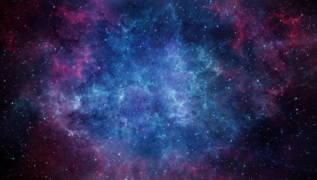

Дуглас Адамс
Ресторан "У конца Вселенной"
Есть теория, согласно которой в том случае, если кто-то точно выяснит, для чего и зачем появилась Вселенная, она тут же исчезнет, и ее заменит нечто другое, еще более бессмысленное и необъяснимое.
Есть другая теория, согласно которой это уже произошло.
Галактический Путеводитель для Путешествующих Автостопом отмечает, что «Зона Бедствия», рок-группа из Рассудных Дней, что на Гагранаке, общепризнанно считается не только самой громкой рок-группой во всей Галактике, но и вообще просто самым громким шумом. Их поклонники едины во мнении, что наилучший аудиоэффект достигается при прослушивании концерта из большого железобетонного бункера, расположенного примерно в полусотне километров от сцены. Сами музыканты во время концертов играют на своих инструментах с помощью дистанционного управления с борта космического корабля, лежащего на орбите вокруг планеты — чаще, правда, вокруг совсем другой планеты.
Их песни в основном очень просты, и своядтся к очень традиционной схеме: мальчик встречает девочку под серебряной луной, а луна потом возьми да и взорвись ни с того ни с сего.
Многие планеты запретили их концерты, некоторые из соображений высокого искусства, а большинство — потому, что работа аудиосистем группы вступала в противоречие с местными договорами по ограничению стратегических вооружений.
Это, тем не менее, не снизило их доходов от дальнейшего расширения границ гиперматематики. Их главный бухгалтер-исследователь не так давно получил титул профессора неоматематики в Максимегалонском университете, в знак признания его заслуг по развитию как общей, так и специальной теорий налогообложения группы «Зоны Бедствия», в которых он доказывает, что ткань пространственно-временного континуума не только изрядно повытерлась, но и вообще лишена основы.
Форд, спотыкаясь, добрался до столика, за которым сидели Зафод, Артур и Триллиан в ожидании начала представления.
— Нужно закусить, — сказал он.
— Ну что, Форд, — сказал Зафод, — поговорил ты с оралой?
Форд странно покрутил головой.
— С Жармраком? Ну… да, вроде как поговорил.
— Что он сказал?
— В общем, немного… Он… того…
— Чего?
— Он умер на год, чтобы уладить проблемы с налогами. Дайте сесть.
Он уселся.
Подошел официант.
— Желаете меню? — спросил он. — Или познакомитесь с Фирменным Блюдом?
— А? — сказал Форд.
— А? — сказал Артур.
— А? — сказала Триллиан.
— Круто, — сказал Зафод. — Давай сюда свой деликатес. Деликатничать с ним мы не будем.
В маленькой комнате в одном из лучей Ресторана некто высокий, худой, и костлявый чуть отодвинул штору на окне и в лицо ему глянуло забвение.
Это лицо не было красивым, возможно, потому, что забвение столько раз глядело в него. Начать с того, что оно было слишком длинным, глаза и щеки слишком глубоко запали, губы были слишком тонкими, и когда они раздвигались, зубы между ними блестели, как только что начищенная каминная решетка. Руки, которые держали штору, тоже были длинные и тонкие. И холодные. Они едва касались складок шторы, и казалось, что если их владелец не будет следить за ними, словно коршун за куропатками, они сами по себе отползут в сторонку, и там сделают что-нибудь, о чем не принято говорить в приличном обществе.
Он опустил штору, и жуткий свет, игравший на его физиономии, отправился поиграть в каком-нибудь месте поздоровее. Он прошелся по своей комнате, словно хищник, вышедший облегчиться, и уселся на стул у столика на трех ножках. Он просмотрел несколько страниц свежих приколов.
Прозвенел звонок.
Он отбросил тонкую пачку листков и встал. Его руки прошлись по отдельным перышкам из миллиона разноцветных перышек, которыми был украшен его пиджак, и он вышел.
В зале Ресторана притушили огня, оркестр убыстрил темп, узкий луч света упал на проход из-за занавеса к сцене в центре зала.
По нему шел некто высокий, худой, костлявый, одетый в радужный пиджак. Он взбежал на сцену, подскочил к микрофону, одним движением тонкой длинной руки выхватил его из стойки и несколько мгновений стоял, кланяясь налево и направо, принимая аплодисменты, и демонстрируя всем присутствующим свою каминную решетку. Он помахал своим близким друзьям в зале — хотя их там не было — и подождал, пока аплодисменты утихнут.
Он поднял руку и улыбнулся. Его улыбка шла не только от уха до уха, но, казалось, еще и выступала за естественные границы его лица.
— Спасибо, дамы и господа! — крикнул он. — Большое спасибо! Благодарю вас.
Он подмигнул.
— Дамы и господа, — сказал он. — Как мы знаем, к настоящему моменту Вселенная существует уже более ста семидесяти тысяч миллионов миллиардов лет, а ее конец настанет через немногим более получаса. Итак, добро пожаловать в Маккосмикс, Ресторан «Конец Вселенной»!
Он махнул рукой, чем вызвал очередной взрыв аплодисментов. Еще раз взмахнув рукой, он оборвал его.
— Я ваш хозяин на сегодня, — сказал он, — меня зовут Макс Квордлиплен.
(Все и так это знали, представления в Ресторане были известны во всей обитаемой Галактике, но он сделал это просто для того, чтобы дать аудитории возможность поаплодировать.)
— Я только что вернулся с самого самого самого что ни на есть противоположного конца времен, куда меня пригласили выступить в Большом Трахбургер-Баре. И это был замечательный вечер, дамы и господа, а сегодня я с вами, и мы вместе будем переживать величайшее событие — Конец Самой Истории!
Взрыв аплодисментов стих, когда свет в зале притушили еще больше. На каждом столике сами собой зажглись свечи, и это вызвало восхищенный вздох всех собравшихся. Они превратили зал в скопление нервных огоньков и дрожащих теней. По залу побежал шепоток, а золотой купол над ними становился все прозрачнее, прозрачнее…
Макс заговорил тише:
— Итак, дамы и господа: — свечи горят, оркестр наигрывает что-то мягкое, и защищенный силовым полем купол медленно тает, и мы оказываемся под небом, полным света набухших звезд. Я предвижу сегодня славный вечерний апокалипсис.
Даже едва слышное треньканье оркестра стихло, когда на публику опустилось облако тяжелого шока при виде того, что еще не все из присутствующих видели.
Чудовищный, мертвенный свет хлынул в зал — жуткий свет, распухший, гноящийся свет, — свет, от которого стошнило бы всех чертей в аду.
Вселенная близилась к концу.
Несколько нескончаемых мгновений Ресторан бесшумно скользил сквозь бушующую пустоту. Затем Макс снова заговорил.
— Специально для тех, кто надеялся увидеть свет в конце туннеля, сказал он. — Вот он!
Оркестр врезал марш.
— Благодарю вас, дамы и господа, — вскричал Макс, — я снова буду с вами через несколько минут, а пока я оставляю вас на милость крайне любезного мистера Рэга Аннигили. Рэг Аннигили и его Катаклизмик-Бэнд! Аплодисменты, дамы и господа, встретим Рэга и мальчиков!
В небесах продолжалась агония Вселенной.
Послышалось несколько неуверенных хлопков, к которым в конце концов присоединился весь зал, и все снова задвигались, и продолжили разговоры. Макс пошел в обход зала, отпуская шуточки, взрываясь смехом, зарабатывая на жизнь.
К Зафоду Библброксу подошло большое жирное четвероногое, отдаленно напоминающее корову, с большими печальными глазами, маленькими рожками, и почти заискивающей улыбкой на губах.
— Добрый вечер, — промычало оно, и тяжело опустилось на корточки. — Я Фирменное Блюдо. Могу ли я предложить вам себя? — Оно тяжело вздохнуло, мирно посмотрело на всех, и поудобнее расставило передние ноги.
Его взгляд встретился со взглядами Артура и Триллиан, полных испуганного недоумения, взглядом Форда Префекта, полным абсолютного спокойствия, и взглядом Зафода Библброкса, полным жгучего голода.
— Может быть, кусочек грудинки? — предложило Фирменное Блюдо. — Тушеной в белом винном соусе?
— Э-э… твоей грудинки? — шепот Артура был звуковым аналогом его взгляда.
— Ну разумеется, моей грудинки, сэр, — укоряюще промычало Фирменное Блюдо. — Чью же еще я вправе предлагать?
Зафод вскочил на ноги и принялся, облизываясь, ощупывать грудинку Фирменного Блюда.
— Окорок тоже очень хорош, — бормотало Блюдо. — Я много двигалось, и хорошо питалось, так что в нем очень много качественного мяса. — Оно мелодично фыркнуло, срыгнуло жвачку, пожевало ее, и снова проглотило.
— Может быть, рагу из вырезки? — добавило оно.
— Ты хочешь сказать, что это животное в самом деле хочет, чтобы мы его съели? — шепотом спросила Триллиан у Форда.
— Я? — удивился Форд. Глаза его полностью остекленели. — Я вообще ничего не хочу сказать.
— Но это же абсолютно ужасно, — вскричал Артур, — никогда не слышал ничего противнее!
— В чем проблема, землянин? — спросил Зафод, перемещая внимание на окорок Блюда.
— Но я не хочу есть животное, которое стоит передо мной, и приглашает меня его съесть, — сказал Артур. — Это жестоко.
— Лучше, чем есть животное, которое не хочет, чтобы его съели, — заметил Зафод.
— Не в том дело, — возразил Артур. Потом он подумал над словами Зафода. — Ладно, — сказал он, — может быть, дело именно в этом. Мне все равно, я не хочу об этом думать сейчас. Я просто… э…
Вселенная корчилась над ними в предсмертнах судорогах.
— Я лучше закажу шпинат, — пробормотал Артур.
— Могу ли я обратить ваше внимание на печень? — спросило животное, она уже должна стать жирной и нежной. Я себя насильно раскармливало последние несколько месяцев.
— Шпинат, — твердо сказал Артур.
— Шпинат? — переспросило животное, неодобрительно уставившись на Артура.
— Ты собираешься сказать мне, что шпинат брать не стоит?
— Что ж, — сказало животное, — я встречало много овощей, мнение которых по этому поводу отличалось от вашего. Именно поэтому решили раз и навсегда покончить с этой запутанной проблемой и вывести животное, которое на самом деле хочет, чтобы его съели, и может четко и ясно сказать об этом. И это я.
Оно отвесило очень короткий поклон.
— Стакан воды, пожалуйста, — сказал Артур.
— Слушай, — сказал Зафод, — мы есть хотим, а не спорить по поводу диетических блюд. Четыре больших бифштекса, с кровью, и побыстрее. Мы не ели последние пятьсот семьдесят шесть тысяч миллионов лет.
Фирменное Блюдо с трудом поднялось. Оно мелодично рыгнуло.
— Хороший выбор, сэр, если можно так выразиться. Хорошо, а теперь я пойду и застрелюсь.
Оно повернулось, и дружески подмигнуло Артуру.
— Не волнуйтесь, сэр, — сказало оно. — Я буду очень гуманно.
И неторопливо потрусило в направлении кухни.
Через несколько минут официант подал четыре огромных дымящихся бифштекса. Зафод и Форд вгрызлись в них без всяких колебаний. Триллиан посмотрела на них, пожала плечами, и принялась за свою порцию.
Артур уставился на них, чувствуя, что его подташнивает.
— Землянин, — спросил Зафод, мерзко ухмыляясь той физиономией, которая не была занята поглощением бифштекса, — что тебя гложет?
И оркестр снова врезал марш.
Воздух был полон веселой болтовни, смесью экзотических запахов невиданных растений, изысканной еды и весьма коварных напитков. На бесконечное число миль вокруг бушевал последний космический шторм, готовясь к ошеломляющей кульминации. Взглянув на часы, Макс восторженно выскочил на сцену.
— А теперь, дамы и господа, — сверкнул он своей каминной решеткой, скажите мне, все ли вы прекрасно проводите время?
— Да, — крикнули те, кто всегда кричит «Да», если конфераньсе спрашивает их, хорошо ли они проводят время.
— Отлично, — с энтузиазмом воскликнул Макс, — просто отлично. И сейчас, когда фотонные бури срывают последние облака с красных горячих звезд, готовясь разорвать их на маленькие клочочки, я знаю, что вы готовы насладиться вместе со мной тем, что, я точно знаю, будет нашим самым большим и последним впечатлением.
Он помолчал. И снова блеснул улыбкой.
— Поверьте, дамы и господа, — сказал он, — после этого никаких впечатлений уже не будет.
Он снова сделал паузу. Сегодня он как никогда рассчитал ритм своего выступления. Раз за разом он говорил это, из вечера в вечер. Не то чтобы слово вечер что-то значило сейчас, у конца времен. Сейчас было только бесконечным повторением одного и того же последнего момента, в который Ресторан качнется и рухнет за грань края времени — и вернется обратно. В этот вечер, тем не менее, все шло даже лучше обычного, и аудитория была послушна движениям его болезнненных пальцев. Его голос стал тише. Теперь он почти шептал, и посетителям приходилось напрягаться, чтобы расслышать его.
— Это, — сказал он, — на самом деле абсолютный конец, последняя жуткая катастрофа, в которой исчезает все многообразие творения. Это, дамы и господа, и есть пресловутый Черный День.
Он еще понизил голос. В наступившей тишине муха не осмелилась бы даже кашлянуть.
— После этого, — сказал он, — нет ничего. Пустота. Пропасть. Забвение. Абсолютное ничто…
Его глаза сверкнули — или блеснули?
— Нет ничего… — конечно, кроме тележки со сладостями, и прекрасных альдебаранских ликеров!
Оркестр поддержал его короткой бравурной мелодией. Лучше бы они этого не делали, подумал он. Ему это не было нужно, он был артистом высшего класса. Он сам владел своими слушателями, как музыкальным инструментом. А они облегченно смеялись. Он продолжал.
— И единственный раз, — бодро вскричал он, — вам не придется беспокоиться о похмелье на следующее утро — потому что следующего утра не будет!
Он снова широко улыбнулся счастливым, сияющим посетителям. Он взглянул на небо, которое продолжало свое собственное ежевечернее выступление, но всего на долю секунды. Он полагался на него, как один профессионал полагается на другого.
— А теперь, — сказал он, расхаживая по сцене, — я рискну несколько притушить ваше чудесное чувство обреченности и бесцельности, царящее здесь сегодня вечером, и представлю несколько групп, присутствующих на нашем празднике.
Он вынул из кармана бумажку.
— Есть ли здесь — он поднял руку, чтобы успокоить аплодисменты, Есть ли здесь компания из Занселквейзерского клуба любителей бриджа имени Фламмариона из-за Вортвойда-на-Кверне? Они здесь?
За столиками где-то сзади поднялся дикий приветственный шум, но он не обратил на него внимания. Он сделал вид, что напряженно вглядывается в зал, пытаясь найти их.
— Они здесь? — еще раз спросил он, чтобы вызвать больше шума, и это ему удалось.
— А, вот они. Ну что, последние ставки, ребята, и не шельмовать, это очень торжественный момент.
Он жестом прервал смех слушателей.
— А есть ли здесь, есть ли здесь… компания младших богов из Залов Асгарда?
Справа от сцены раздался удар грома. Через зал пролетела молния. Несколько волосатых мужчин в шлемах выглядели очень довольными собой, и подняли кубки, приветствуя Макса.
Из бывших, подумал он.
— Осторожнее с молотом, сэр, — сказал он.
Они снова проделали трюк с молнией. Макс улыбнулся им самой тонкогубой из своих тонкогубых улыбок.
— В-третьих, — продолжал он, — представители Движения молодых консерваторов с Сириуса Б, они здесь?
Компания прекрасно одетых молодых псов прекратила перекидываться шариками из хлебного мякиша, и стала бросать их на сцену. Они лаяли и нечленораздельно рычали.
— И наконец, — сказал Макс, взмахом руки успокаивая посетителей и напуская на себя серьезный вид, — наконец, в зале должна быть группа последователей, очень преданных последователей, учения о Втором Пришествии Великого Пророка Зарквона.
Их было около двадцати, и они сидели у самой сцены, одетые в самую простую одежду, пили минеральную воду, и не разделяли общего веселья. Они презрительно замигали, когда прожектор осветил их.
— Вот они, сидят и ждут. Он сказал, что придет снова, и заставил вас ждать так долго, что давайте попросим его поторопиться, ребята, потому что у него осталось только восемь минут!
Последователи Зарквона сидели с каменными лицами, не обращая внимания на взрыв хохота вокруг них.
Макс остановил хохот.
— Нет, но если серьезно, друзья, если серьезно, то я не хотел вас обидеть. В самом деле, нельзя смеяться над глубокими убеждениями, так что, пожалуйста, аплодисменты Великому Пророку Зарквону…
Посетители вежливо похлопали.
— …куда бы он ни делся!
Он послал каменнолицым зарквонианам воздушный поцелуй, и вернулся в центр сцены.
Он схватил высокий стул и уселся на него.
— И все равно просто чудесно, — продолжал он, — что мы все здесь сегодня собрались — разве нет? Да, просто чудесно. Потому что я знаю, что многие из вас приходят сюда снова и снова, и я знаю, что это просто здорово, приходят сюда, чтобы увидеть этот окончательный конец всего сущего, а потом возвращаются в свои времена… создают семьи, борются за улучшение общества, ведут страшные войны за свои убеждения… и это позволяет надеяться на светлое будущее всей жизни во Вселенной. Вот только все мы знаем, — он указал на потолок, — что этого будущего у нее нет…
Артур повернулся к Форду. Ему еще не удалось окончательно свыкнуться с этим местом.
— Слушай, но ведь если Вселенной пришел конец, — сказал он, — то мы исчезнем вместе с ней, разве нет?
Форд уставился на него. В его взгляде булькало три Всегалактических «Мозгобойных», что не придавало ему устойчивости.
— Да нет, — сказал он, — вот слушай, — сказал он, — как только ты входишь в эту забегаловку, ты сразу попадаешь в прочную, защищенную силовым полем, временную петлю. Я думаю.
— А, — сказал Артур. Он снова сконцентрировался на тарелке супа, которую ему удалось выпросить у официанта взамен бифштекса.
— Слушай, — сказал Форд. — Сейчас объясню.
Он схватил со стола салфетку и безуспешно попытался ее свернуть.
— Слушай, — повторил он, — представь себе, что эта салфетка — темпоральная Вселенная, ясно? А эта ложка — рабочая волна хроновода в преобразователе материи, ясно…
Последняя фраза отняла у него немало сил и времени, а Артуру очень не хотелось прерывать его.
— Это моя ложка, — сказал он.
— Ладно, — сказал Форд, — представь, что эта ложка… — он нашел маленькую деревянную ложечку в судке с соусом, — эта ложка… — но схватить ее ему не удалось, — нет, лучше эта вилка…
— Оставь мою вилку в покое! — заорал Зафод.
— Ладно, — сказал Форд. — Ладно, ладно, ладно. Ну почему бы тогда не сказать… почему бы тогда не сказать, что этот бокал — темпоральная Вселенная…
— Который, тот, что ты только что смахнул на пол?
— Я его смахнул?
— Да.
— Ладно, — сказал Форд. — Забудем. Я хочу сказать… я хочу сказать… Слушай, для начала — ты знаешь, как началась Вселенная?
— Наверно, нет, — сказал Артур, который уже пожалел, что завел этот разговор.
— Ладно, — сказал Форд. — Представь. Себе. Вот. Берешь эту ванну. Вот. Большую круглую ванну. А сделана она из черного дерева.
— А где я ее возьму? Черное дерево исчезло вместе с Землей.
— Неважно.
— Это ты всегда говоришь.
— Слушай меня.
— Ладно.
— Берешь эту ванну, понял? Представь себе, что ты берешь эту ванну. И она из черного дерева. И в форме конуса.
— Конуса? — спросил Артур. — Кому нужна ванна в форме…
— Шшшш! — сказал Форд. — В форме конуса. И вот что ты с ней делаешь, понял: ты ее наполняешь чистым белым песком, понял? Или сахарным песком. Чистым белым песком и/или сахаром. Чем угодно. Неважно. Сахар сойдет. А когда ты ее наполнишь, ты выдергиваешь пробку… ты меня слушаешь?
— Слушаю.
— Ты выдергиваешь пробку, и все это высыпается, высыпается такими завихрениями, из дырки.
— Понятно.
— Ничего тебе не понятно. Абсолютно ничего тебе не понятно. Я еще не добрался до хитрого места. Хочешь, расскажу, в чем хитрость?
— Расскажи, в чем хитрость.
— Сейчас я тебе расскажу, в чем хитрость.
Форд подумал немного, пытаясь вспомнить, в чем же была хитрость.
— Хитрость, — сказал он, — вот в чем. Ты снимаешь все это на пленку.
— Хитро, — согласился Артур.
— У тебя есть камера, и ты снимаешь все это на пленку.
— Хитро.
— Это еще не хитрое место. А вот и хитрое место, теперь я вспомнил, в чем же хитрость. Хитрость в том, что ты теперь прокручиваешь пленку… задом наперед!
— Задом наперед?
— Именно. То, что ты прокручиваешь ее задом наперед, это и есть хитрое место. Ну вот, а потом ты просто сидишь и смотришь, как все, что было в этой ванне просто как бы вливается в нее обратно через дырку, и завихряется, и постепенно снова ее заполняет. Понял?
— Так и началась Вселенная? — спросил Артур.
— Нет, — сказал Форд, — но это отличный вид отдыха.
Он потянулся за своим бокалом.
— Где мой бокал? — спросил он.
— На полу.
— А…
Оттолкнув задом стул, чтобы полезть под стол за стаканом, Форд едва не сбил с ног маленького зеленого официанта, который подошел к столу с телефоном в руках.
Форд извинился, и принялся объяснять официанту, что это произошло только потому, что он был неимоверно пьян.
Официант сказал, что все в порядке, и что он прекрасно понимает Форда.
Форд поблагодарил официанта за его снисходительность, попытался потянуть его за чубчик, промахнулся сантиметров на двадцать, и соскользнул под стол.
— Мистер Зафод Библброкс? — осведомился официант.
— Ну да, а что? — Зафод отвел взгляд от третьего бифштекса.
— Вас к телефону.
— Что?
— Вас к телефону, сэр.
— Меня? Здесь? А кто знает, что я здесь?
Одна из его голов бешено озиралась. Другая влюбленно смотрела на бифштекс.
— Прости, я продолжу, ладно? — спросила она, и вгрызлась в мясо.
За ним теперь охотилось столько народу, что он просто сбился со счета. Ему не следовало появляться с таким шумом, подумал он. А почему нет, черт побери, подумал он. Откуда ты узнаешь, что ты весело проводишь время, если тебя никто не видит?
— Может, кто-то сообщил в Галактическую полицию? — сказала Триллиан. — Все видели, как ты вошел.
— Ты хочешь сказать, что они собрались арестовать меня по телефону? сказал Зафод. — Может быть. Я становлюсь очень опасен, когда меня прижмут в угол.
— Точно, — послышалось из-под стола, — смываешься так быстро, что начинается наводнение.
— У нас что сегодня, Судный День? — рявкнул Зафод.
— А он тоже будет? — занервничал Артур.
— Лично я не тороплюсь, — пробормотал Зафод. — Ладно, так кто этот тип на том конце? — Он пнул Форда. — Эй, вылезай, ты можешь мне понадобиться.
— Я не знаком лично, — сказал официант, — с металлическим господином, которого вы имеете в виду, сэр…
— Металлическим?
— Да, сэр.
— Ты сказал «металлическим»?
— Да, сэр. Я сказал, что не знаком лично с металлическим господином, которого вы имеете в виду…
— Ладно, ладно, дальше давай!
— …но он сообщил мне, что его ожидание вашего возвращения длилось довольно много миллионолетий. Кажется, вы отбыли отсюда несколько поспешно.
— Отбыли отсюда? — сказал Зафод. — Что за новости? Мы только что прибыли сюда.
— Несомненно, сэр, — настаивал официант, — но до того, как вы прибыли сюда, сэр, как я понимаю, вы отбыли отсюда.
Зафод обдумал это сначала одной головой, потом другой.
— Ты хочешь сказать, — спросил он, — что прежде чем прибыть сюда, мы отбыли отсюда?
Ну и вечерок выдался, подумал официант.
— Именно, сэр, — сказал он.
— Тебе надо платить своему психиатру вдвое больше, — посоветовал Зафод.
— Нет, погодите минуту, — сказал Форд, снова всплывая на уровень стола, — где конкретно здесь?
— Если быть абсолютно конкретным, сэр, это вторая планета система Жабулона.
— Но мы отбыли оттуда, — возразил Зафод. — Мы отбыли оттуда и прибыли в Ресторан «Конец Вселенной».
— Да, сэр, — ответил официант, почувствовав, что попал в привычную колею. — На обломках первого построили последний.
— А, — воскликнул Артур, которому вдруг все стало ясно, — так мы двигались не в пространстве, а во времени.
— Слушай, ты, недоразвитый обезьяний сын, — вмешался Зафод, — полезай обратно на дерево, а?
Артур решил, что с него хватит.
— А пошел бы ты завязал свои головы узелком, четырехглазый, — заявил он.
— Что вы, — обратился официант к Зафоду, — ваша обезьянка абсолютно права, сэр.
Артура обуяла такая ярость, что он мог только заикаться, и ему не удалось сказать что-нибудь в ответ, или вообще что-нибудь.
— Вы переместились вперед… думаю, на более чем пятьсот семьдесят шесть тысяч миллионов лет, оставаясь на одном и том же месте, — объяснил официант. Он улыбнулся. У него было великолепное чувство, что он наконец пробрался через все хитросплетения сегодняшнего вечера.
— Все! — заявил Зафод. — Понял. Я сказал компьютеру, что мы хотим попасть в ближайшее место, где можно поесть, и именно это он с нами и проделал. Плюс-минус пятьсот семьдесят шесть тысяч миллионов лет, а с места мы и не сдвинулись. Хитро.
Они все согласились, что это действительно было хитро.
— Но тогда, — спросил Зафод, — кто этот тип у телефона?
— А что случилось с Марвином? — спросила Триллиан.
Зафод схватился за головы.
— Андроид-Параноид! Я оставил его слоняться по Жабулону-Б.
— Когда это было?
— Думаю, э-э… пятьсот семьдесят шесть тысяч миллионов лет назад, сказал Зафод. — Ладно, давай сюда устройство, Начальник Тарелок.
Брови маленького официанта попытались спрятаться в его волосах.
— Простите, сэр? — сказал он.
— Официант, телефон, — пояснил Зафод, и грубо отобрал телефон. — Диву даешься: вы, ребята, такие убогие, что вам впору милостыню просить.
— Несомненно, сэр.
— Эй, Марвин, это ты? — кричал Зафод в трубку. — Как дела, дружище?
Последовала долгая тишина, после которой из трубки послышался далекий низкий голос.
— Мне кажется, вы должны знать, что я в глубокой депрессии, — сказал он.
Зафод накрыл трубку ладонью.
— Это Марвин, — сказал он.
— Слушай, Марвин, — крикнул он в трубку, — мы тут отлично проводим время. Еда, вино, чуть до драки не дошло, и Вселенная сейчас грохнется. Ты где?
Снова тишина.
— Не стоит притворяться, что я вас интересую, — наконец сказал Марвин. — Я прекрасно знаю, что я просто ущербный робот.
— Ладно, ладно, — сказал Зафод. — Так где тебя найти?
— Полный назад, Марвин, — так мне говорят — открой шлюз номер три, Марвин. Марвин, подними, пожалуйста, этот листок. Поднять этот листок! Вот он я, мозг величиной с планету, а меня просят…
— Да-да, — в голосе Зафода полностью отсутствовало сочувствие.
— Но я уже привык к тому, что меня унижают, — ныл Марвин. — Я могу даже пойти и засунуть голову в ведро с водой, если хотите. Хотите, я засуну голову в ведро с водой? Оно у меня с собой. Подождите минуту.
— Эй, Марвин, — попытался остановить его Зафод, но было уже поздно. Из трубки послышалось звяканье и плеск.
— Что он говорит? — спросила Триллиан.
— Ничего, — ответил Зафод. — Он позвонил, только чтобы устроить головомойку.
— Вот, — снова сказал Марвин в трубку. В голосе его появилось непривычное бульканье. — Теперь вы довольны, надеюсь?
— Конечно, конечно, — сказал Зафод, — ты нам скажешь, наконец, где тебя найти?
— Я в гараже, — сказал Марвин.
— В гараже? Что ты там делаешь?
— Мою машины, что еще можно делать в гараже?
— Ладно, жди там, мы сейчас придем.
Одним движением Зафод вскочил на ноги, бросил трубку, и написал на счете «Жармрак Дезиато».
— Пошли, ребята, — сказал он. — Марвин в гараже. Заберем его.
— Что он делает в гараже? — спросил Артур.
— Моет машины, что же еще? Маленький и глупый.
— А Конец Вселенной? Мы же его пропустим.
— Я его видел. Ерунда, — сказал Зафод, — просто Харт Йолшоб.
— Что?
— Большой Трах наоборот. Пошли скорее, шевелитесь.
Мало кто обратил на них внимание, когда они пробирались к выходу. Всеобщее внимание было приковано к тому, что происходило в небесах.
— Вот в том углу очень интересное явление, — говорил Макс, — в верхней левой части неба. Если присмотреться, вы увидите, как звездная система Гастромил разлетается на маленькие ультрафиолетовые кусочки. Есть здесь кто-нибудь с Гастромила?
Несколько одиноких и очень неуверенных выкриков «Да» послышались откуда-то сзади.
— Ну что ж, — улыбнулся им Макс, — во всяком случае, уже поздно беспокоиться, не забыли ли вы выключить газ на кухне.
 Огромное фойе было почти пустым, но для размашистой траектории Форда в нем все равно не хватало места.
Зафод схватил его за руку, и, после серии толчков, ему удалось втолкнуть Форда в кабинку у стены.
— Что ты с ним делаешь? — спросил Артур.
— Отрезвляю, — ответил Зафод, и бросил в щель монетку. Замигали огоньки, и Форда окутало облако разноцветных газов.
— Привет, — сказал Форд, выходя из кабинки, — куда направляемся?
— В гараж, пошли скорее.
— Смотри, кабинка персональной хронопортации, — сказал Форд. — Можно вернуться прямо на Золотое Сердце.
— Ага, только я охладел к этому кораблю. Пусть с ним развлекается Зарнивуп, а я не желаю играть в его игры. Посмотрим, что здесь есть.
Счастливый вертикальный транспортер корпорации Сириус Кибернетикс опустил их глубоко под Ресторан. Им доставило большое удовольствие то, что кто-то уже поработал над этим лифтом, и он не старался осчастливить их по дороге.
Внизу двери лифта открылись и впустили в кабину поток холодного воздуха.
Первое, что они увидели, выйдя из лифта — длинная бетонная стена, а в ней пятьдесят дверей в пятьдесят туалетов, приспособленных для пятидесяти наиболее распространенных форм жизни. Тем не менее, пахло в нем именно так, как пахнет в любом другом гараже Галактики во всей истории гаражей, то есть, в основном, крайней спешкой.
Они свернули за угол и оказались на движущемся мостике, который пересекал огромную пещеру гаража. Его дальний конец терялся в полумраке.
Гараж был разделен на множество отделений, и в каждом стоял космический корабль, чей владелец наверху развлекался зрелищем агонии Вселенной. Корабли были разного класса — тут простая серийная модель, а там — огромный сияющий лимурабль, игрушка для миллионеров.
В глазах Зафод, когда он проходил мимо, загорелось нечто, что могло быть, а могло и не быть, алчностью. Впрочем, будем откровенны — это была именно алчность.
— Вон он, — сказала Триллиан. — Марвин… вон там.
Они поглядели туда, куда она указывала. С трудом смогли они разглядеть металлическую фигурку, безрадостно возившую тряпкой по корпусу огромного серебряного суперлайнера.
Через равные промежутки с мостика опускались полые прозрачные трубы. Зафод ступил в одну из них и плавно опустился на пол. Остальные последовали за ним. Когда Артур Дент впоследствии вспоминал свои похождения, ему всегда казалось, что это единственное приятное впечатление из всех его странствий по Галактике.
— Марвин, — вскричал Зафод, подскочив к роботу. — Как же я рад тебя видеть!
Марвин обернулся. Насколько это возможно для металлического лица выразить упрек, оно его выразило.
— Нет, не рад, — сказал он. — Мне никто не рад.
— Как хочешь, — сказал Зафод и отвернулся, осматривая корабли. Форд пошел за ним.
Так что к Марвину подошли только Триллиан и Артур.
— Да нет, мы действительно рады, — сказала Триллиан и потрепала его по плечу, что ему сразу же активно не понравилось.
— Тебе пришлось так долго нас ждать.
— Пятьсот семьдесят шесть тысяч миллионов три тысячи пятьсот семьдесят девять лет, — сказал Марвин. — Я считал.
— Ну, вот и мы, — сказала Триллиан, чувствуя, и, по мнению Марвина, совершенно справедливо, что эта фраза звучит несколько глупо.
— Первые десять миллионов лет были самыми тяжелыми, — сказал Марвин, — а вторые десять миллионов лет были тоже самыми тяжелыми. Третьи десять миллионов лет были просто ужасны. После этого наступило что-то совершенно кошмарное.
Он сделал достаточно длинную паузу, чтобы Триллиан и Артур почувствовали, что он ждет, пока они что-нибудь скажут, и, не дождавшись, продолжал:
— На этой работе постоянно встречаешься с новыми людьми. И это ужасно угнетает, — сказал он, и снова замолчал.
Триллиан кашлянула.
— А что…
— Сорок миллионов лет назад у меня был последний приятный разговор, продолжал Марвин.
Снова помолчал.
— А что…
— С кофеваркой.
Снова пауза.
— Нам…
— Вам не очень нравится беседовать со мной, да? — низким безнадежным голосом проговорил Марвин.
И Триллиан повернулась к Артуру.
Форд отошел в сторону, и нашел одну вещь, которая ему очень понравилась. Если быть более точным, несколько таких вещей.
— Зафод, — сказал он тихо, — ты только взгляни на эти тачки…
Зафод взглянул, и они ему приглянулись.
То судно, перед которым они стояли, было довольно маленьким, но крайне необычным, и сильно смахивало на игрушку для миллионеров. С виду вроде бы ничего особенного. Оно было похоже на бумажного голубя длиной метров шести, только сделанного не из бумаги, а очень тонкой и очень прочной фольги. На корме была небольшая рубка на двоих. Корабль был оснащен двигателем на прелестных кварках, а он не позволял развивать очень большую скорость. Зато у корабля был тепловод.
Тепловод весит около двух тысяч миллиардов тонн, и устанавливается в черной дыре, помещенной в электромагнитное поле примерно посередине корабля. Он позволяет подойти на несколько миль к желтому солнцу, чтобы покататься на солнечных вспышках, поднимающихся с него.
Катание на вспышках — один из самых экзотических и возбуждающих видов спорта, и те, кто осмеливается им заниматься, и имеет на это достаточно средств, входят в круг самых знаменитых людей в Галактике. Разумеется, это умопомрачительно опасно — те, кто не сгорает во вспышке, неминумо погибают от сексуального истощения во время Послевспышечных Оргий клуба «Дедал».
Форд и Зафод поглядели и пошли дальше.
— А эта крошка, — сказал Форд, — звездный карт… Вон тот, оранжевый, с черным бампером?
И звездный карт тоже был небольшим — и к тому же его не стоило называть звездным, потому что единственное, чего он не мог — это летать между звездами. Это был просто спортивного вида жучок для полетов с планеты на планету, но форму ему придали такую, чтобы казалось, что он способен на нечто большее. И это удалось. Они пошли дальше.
Дальше стоял огромный роскошный лимурабль. Очевидно, его строили с единственной целью — заставить соседей задохнуться от зависти. И цветом, и роскошью отделки он ясно говорил: «Мой хозяин не только достаточно богат, чтобы позволить себе меня, он еще достаточно богат, чтобы не принимать меня всерьез». Он был чудовищно роскошен.
— Нет, ты только глянь, — сказал Зафод, — многокластерный кварковый ход, перспулексная передача. Наверняка делали на заказ на Лазлар Лириконе.
Он осмотрел каждый дюйм корабля.
— Точно, — сказал он. — Инфрарозовая ящерица на нейтринном выхлопе. Лазларская торговая марка. Стыда нет у человека.
— Меня однажды такая тачка обошла, неподалеку от пылевого облака Алекса, — заметил Форд. — Я себе спокойно несусь на полной скорости, а она вжик мимо меня — и нет ее, только пыль столбом. Нарочно не придумаешь.
Зафод уважительно присвистнул.
— Через десять секунд после этого, — добавил Форд, — они врезались в третью луну Джаглан Беты.
— Да ты что?
— Но смотрится здорово. Летит как молния, а в управлении — как корова.
Форд зашел с другой стороны.
— Эй, смотри, — позвал он, — а здесь на стенке целая фреска. Взрыв звезды — фирменная марка «Зоны Бедствия». Это, наверно, Жармракова коляска. Козел счастливый. У них есть песня, самая жуткая, которая кончается тем, что корабль на автопилоте врезается в солнце. Якобы это чудо что за зрелище. Кораблей уходит чертова куча.
Однако внимание Зафода было привлечено совсем к другому. Он во все глаза уставился на корабль, стоявший рядом с лимураблем Жармрака Дезиато. Оба его рта были широко открыты.
— Вот это… — сказал он, — действительно слепит глаза…
Форд взглянул. И тоже открыл рот.
Это был корабль простых, классических очертаний, словно сплющенный лосось, метров двадцать длиной, без всяких украшений. Но в нем было кое-что особенное.
— Он такой…черный! — прошептал Форд. — Его даже не разглядишь толком… как будто от него и свет не отражается.
Зафод ничего не сказал. Он просто влюбился в этот корабль.
Его чернота была такой абсолютной, что просто невозможно было сказать, насколько близко ты к нему подошел.
— Взгляд не удержишь… — прошептал Форд. Его проняло. Он закусил губу.
Зафод медленно двинулся к кораблю, словно под гипнозом. Он протянул руку и коснулся его. Рука остановилась. Он еще раз протянул руку и потрогал корабль. Рука снова остановилась.
— Иди потрогай, — глухо сказал Зафод.
Форд положил руку на борт. Его рука остановилась.
— Ничего… ничего нет? — сказал он.
— Видишь? — сказал Зафод. — Поверхность начисто лишена трения. Обтекаемость у него…
Он повернулся, и серьезно посмотрел Форду в глаза. То есть, одна его голова повернулась — другая продолжала влюбленно смотреть на корабль.
— Что скажешь, Форд? — сказал он.
— Ты хочешь… — Форд оглянулся. — То есть… угнать его? Думаешь, стоит?
— Нет.
— И я думаю, нет.
— Все равно ведь угоним…
— Как же не угнать…
Они еще посмотрели, и Зафод вдруг встряхнулся.
— Тогда давай поворачивайся, — заявил он, — сейчас будет Конец Вселенной, и все эти буржуи рванут сюда к своим тачкам.
— Зафод, — сказал Форд.
— Ну?
— А как мы это сделаем?
— Запросто, — сказал Зафод. Он повернулся.
— Марвин!
Медленно, мучительно, с тысячью позвякиваний и поскрипываний, которые он научился симулировать, Марвин повернулся, чтобы ответить на его зов.
— Иди сюда, — сказал Зафод. — У нас для тебя работка.
Марвин устало подошел к ним.
— Она мне не понравится, — предупредил он.
— Еще как понравится, — ободрил его Зафод. — У тебя впереди новая жизнь!
— О боже, еще одна! — простонал Марвин.
— Заткнись и слушай! — прошипел Зафод. — На этот раз будут и развлечения, и приключения, и все такое.
— Ужасно, — сказал Марвин.
— Марвин! Все, что мне от тебя нужно…
— Вы, наверно, хотите, чтобы я открыл для вас этот корабль?
— А?.. Ну конечно. — Зафод тяжело дышал. По крайней мере три его глаза следили за входом. Время кончалось.
— Лучше бы так сразу и сказали, чем пытаться пробудить во мне энтузиазм, — сказал Марвин, — у меня его вообще нет.
Он подошел к кораблю, толкнул люк, и тот открылся.
Форд и Зафод уставились на него.
— Не стоит благодарности, — сказал Марвин. — А, ее и не было. — И он поковылял в сторону.
Артур и Триллиан присоединились к похитителям.
— Чем занимаемся? — спросил Артур.
— Погляди, — сказал Форд. — Погляди внутрь этого корабля.
— Жутчает с каждой минутой. — Зафод нашел адекватное выражение своим чувствам.
— Он черный, — сказал Форд. — В нем все абсолютно черное…
Тем временем Ресторан быстро близился к тому моменту, после которого никаких моментов уже не будет.
Внимание всех посетителей было приковано к куполу, всех, кроме телохранителя Жармрака Дезиато, который внимательно следил за Жармраком Дезиато, и самого Жармрака Дезиато, которому телохранитель уважительно прикрыл глаза.
Телохранитель нагнулся над телом Жармрака. Если бы тот был жив, он бы, скорее всего, решил, что это неплохой момент отодвинуться подальше, или даже пойти прогуляться. Его телохранитель был одним из тех людей, которые при ближайшем рассмотрении не становятся приятнее. Тем не менее, в силу своего беспомощного положения, Жармрак сидел абсолютно неподвижен.
— Мистер Дезиато, сэр? — прошептал телохранитель. Когда он говорил, мускулы на его лице, казалось, начинали проталкиваться к выходу, не особенно церемонясь.
— Мистер Дезиато? Вы меня слышите?
Жармрак, естественно, ничего не сказал.
— Жармрак! — прошептал телохранитель.
Опять-таки, что было вполне естественно, Жармрак ничего не ответил. Однако, что было сверхъестественно, он подал знак.
На столике перед ним звякнул бокал, и вилка поднялась над тарелкой, звякнула по графину, и снова опустилась на стол.
Телохранитель удовлетворенно хрюкнул.
— Нам пора, мистер Дезиато, — сказал он. — Вы же не хотите толкаться, когда все будут выходить. Не в вашем состоянии. Вы хотите попасть к началу следующего концерта успокоившись и хорошенько отдохнувши. На него пришло очень много публики. Один из наших лучших концертов. На Какрафуне. Пятьсот семьдесят шесть тысяч и два миллиона лет тому назад. Вы будете выступали на этом концерте.
Вилка снова поднялась в воздух, подвигалась из стороны в сторону, словно отклоняя предложение телохранителя, и снова упала.
— Да ладно вам, — сказал телохранитель, — это будет было просто замечательно. Все торчали. — Его небрежность в обращении с глаголами вызвала бы у д-ра Дана Стритменшенера сердечный приступ, а то и инфаркт.
— Когда черный корабль врезается в солнце, они просто визжат от восторга, а тот, что мы приготовили для этого концерта — просто красавец. Будет просто жаль смотреть, как он сгорит. Когда мы спустимся, я запущу автопилот, а мы уедем на вашей машине. Хорошо?
Вилка снова звякнула, один раз, что означало «да», и бокал с вином сверхъестественным образом опустел.
Телохранитель вывез каталку с телом Дезиато из Ресторана.
— А сейчас, — кричал Макс со сцены, — тот момент, которого мы все ждем! — Он воздел руки к небу. Оркестр позади захлебнулся в барабанной дроби и трелях синтезаторов. Макс уже пытался доказать им, что этого делать не надо, но они заявляли, что раз это есть в контракте, они будут строго его придерживаться. Этим придется заняться его импрессарио, подумал Макс.
— Небеса закипают! — кричал он. — Все сущее исчезает в ревущем водовороте! Через двадцать секунд вся Вселенная перестанет существовать! Да прольется на нас свет бесконечности!
В зал ворвался свет мириадов гибнущих звезд — и в этот момент послышался негромкий звук трубы. Макс в ярости обернулся к оркестру, но музыканты сидели смирно, и ни у одного из них не было в руках трубы. Вдруг на сцене рядом с ним появилось небольшое облачко дыма, и стало расти. К звуку трубы присоединились звуки еще нескольких труб. Макс давал это представление уже более пятисот раз, и ничего подобного до сих пор не случалось. Он испуганно отошел от облачка, и вдруг оно уплотнилось и превратилось в фигуру древнего старца, бородатого и одетого в хитон, испускающий яркий свет. Его глаза светились, словно звезды, и на голове у него была золотая корона.
— Что это? — прошептал Макс. Ему мешала отвисшая нижняя челюсть.
Каменнолицые приверженцы церкви Второго Пришествия Великого Пророка Зарквона вскочили, и принялись распевать приветственные гимны.
Макс заморгал. Он простер руки над публикой.
— Аплодисменты, дамы и господа! — вскричал он. — Поприветствуем Великого Пророка Зарквона! Он пришел! Зарквон вернулся!
Разразились громоподобные аплодисменты, и Макс через всю сцену подошел к Пророку, и отдал ему микрофон.
Зарквон кашлянул. Он, прищурившись, осмотрел зал. Его звездные глаза неуверенно взглянули на микрофон, который он неловко сжал в кулаке.
— Э… — сказал он. — Привет. Э-э… извините, я немного опоздал. Так чертовски неудачно получилось, все вдруг в самый последний момент…
Он занервничал, видя, что все восторженно ожидают его речи. Он опять откашлялся.
— Э… у нас есть немного времени? — спросил он. — Я только хочу…
И тут наступил конец Вселенной.